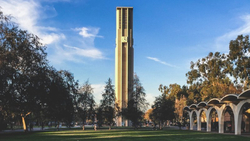
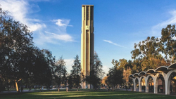
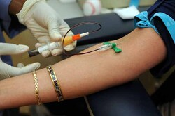
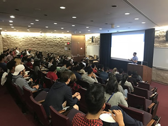
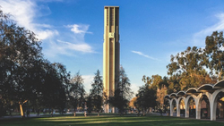
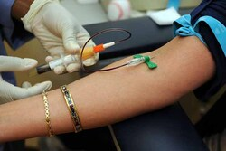
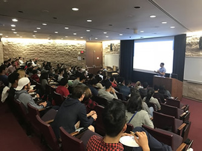

Louie Del Castillo
My name is Louie Del Castillo. I am a 4th year Biochemical Science major at UCR. In addition to my studies I am involved in Hematology research.
My interest in Hematology had started in an earlier job experience as a Phlebotomist. It really facinated me how the Hematology lab at work was very interconnected to a vast majority of departments. Second only to Chemistry departnment, Hematology had the highest traffic with regards to samples output.
My duties in dealing with blood and its constituent parts had motivated in me a deeper desire to learn more about Hematology.
Whenever I was drawing blood from patients I was tasked with taking great care of my samples: processing, fracturizing and sending it off to other lab departments for diagnostic purposes.
Drawing samples from different kinds of patients waranted different instruments and different techniques as blood flux is complex from how blood is circulated and the condition of the blood.
Going through my biochemical program in tandem to my work experience had inspired in me a deeper desire to want to learn more about understanding Hematology; especially for patient care.
Experience
Scribe
• "EMR- Electrical Medical Records"
• Patient-care observation
• Clinical Clerical work
• Microsoft word
Education
University of California, Los Angeles Pre-hospital Care
University of California Riverside
Portfolio
 



 